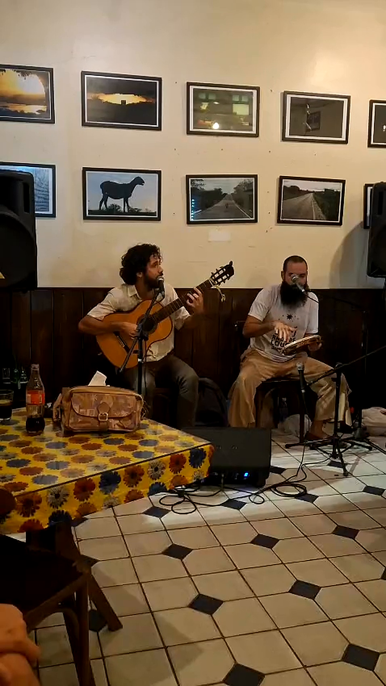

HOJE · 22/1019h
PANDEIRADA DE ANIVERSÁRIO TRIPLO
Ednardo Dali
Miguel Marinho
Aniversário dos dois e do presidente Lula
Couvert R$ 20 · Av. Dr. Joaquim Nabuco, 5 · Varadouro
Dose tripla

Aniversário dos dois e do presidente Lula